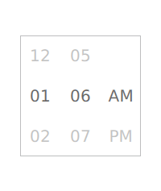

Tumbler QML Type
A spinnable wheel of items that can be selected. More...
| Import Statement: | import Qt.labs.controls 1.0 |
| Inherits: |
Properties
- count : int
- currentIndex : int
- currentItem : Item
- delegate : component
- model : variant
- visibleItemCount : int
Detailed Description
Tumbler {
model: 5
// ...
}
Non-wrapping Tumbler
The default contentItem of Tumbler is a PathView, which wraps when it reaches the top and bottom. To achieve a non-wrapping Tumbler, use ListView as the contentItem:
Tumbler { id: listViewTumbler contentItem: ListView { anchors.fill: parent model: listViewTumbler.model delegate: listViewTumbler.delegate snapMode: ListView.SnapToItem highlightRangeMode: ListView.StrictlyEnforceRange preferredHighlightBegin: height / 2 - (height / listViewTumbler.visibleItemCount / 2) preferredHighlightEnd: height / 2 + (height / listViewTumbler.visibleItemCount / 2) clip: true } }

Note: Types in the Qt.labs module are not guaranteed to remain compatible in future versions.
See also Customizing Tumbler and Input Controls.
Property Documentation
[read-only] currentItem : Item |
This property holds the item at the current index.
model : variant |
This property holds the model that provides data for this tumbler.
This property holds the number of items visible in the tumbler. It must be an odd number, as the current item is always vertically centered.